Pathogen diversity
A pathogen is a disease-causing biological entity capable of replication within a host and transmission between hosts
Broad categories
- RNA viruses
- DNA viruses
- Bacteria
- Parasites and fungi
Mutation rate varies with genome size
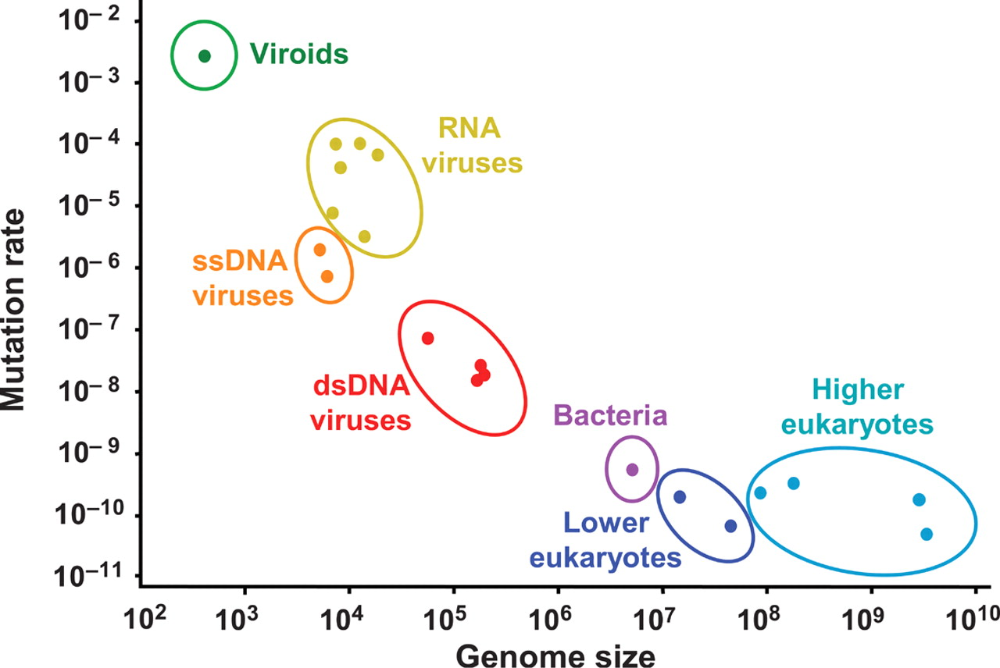Viroids are parasitic functionless RNA
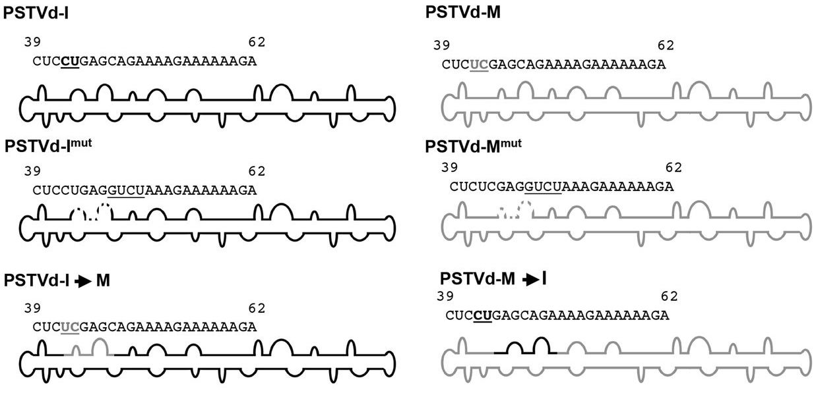Baltimore classification system describes virus groups
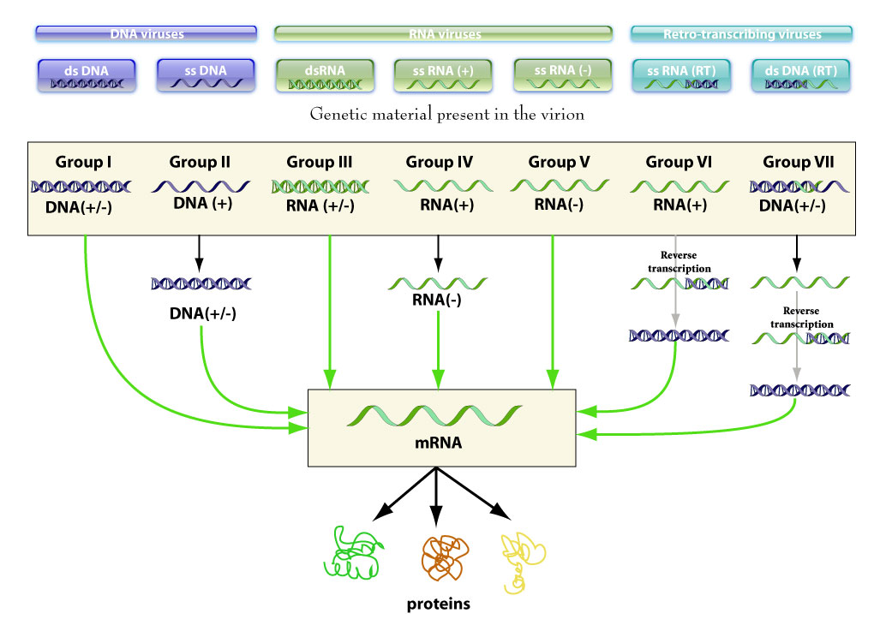RNA virus lifecycle, internal vs surface proteins
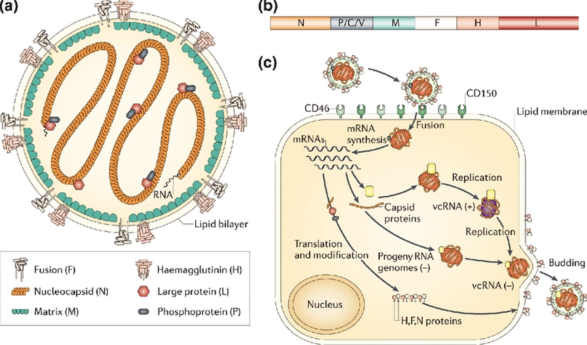Negative-sense RNA virus phylogeny
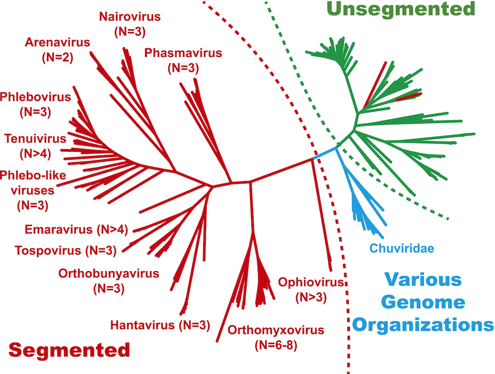Negative-sense RNA virus phylogeny
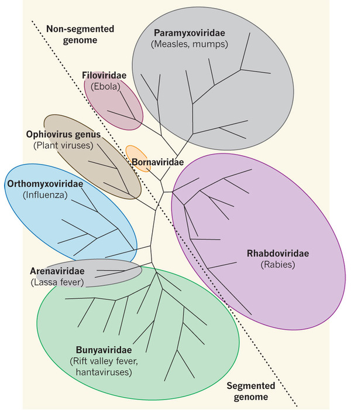Negative-sense RNA viruses
- Influenza
- Measles
- Ebola
- Rabies
- Lassa
- Hanta
- Respiratory syncytial virus (RSV)
Positive-sense RNA viruses
- Flaviviruses: Yellow fever, West Nile, Dengue, Zika, HCV
- Coronavirus
- Rhinovirus
- Polio
- Norovirus
- Chikungunya
Retrovirus lifecycle
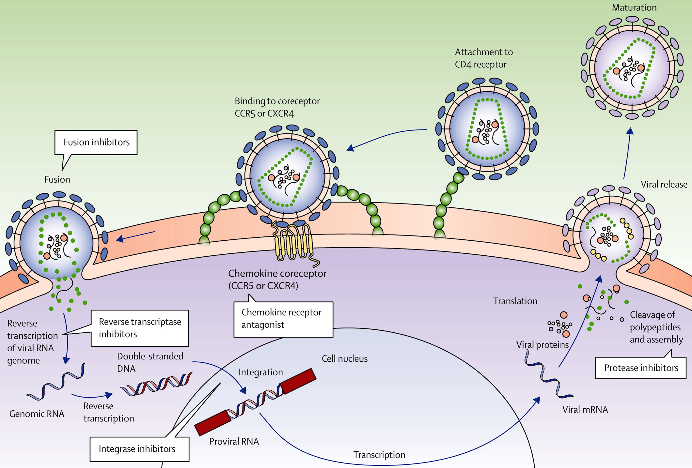DNA virus genomes
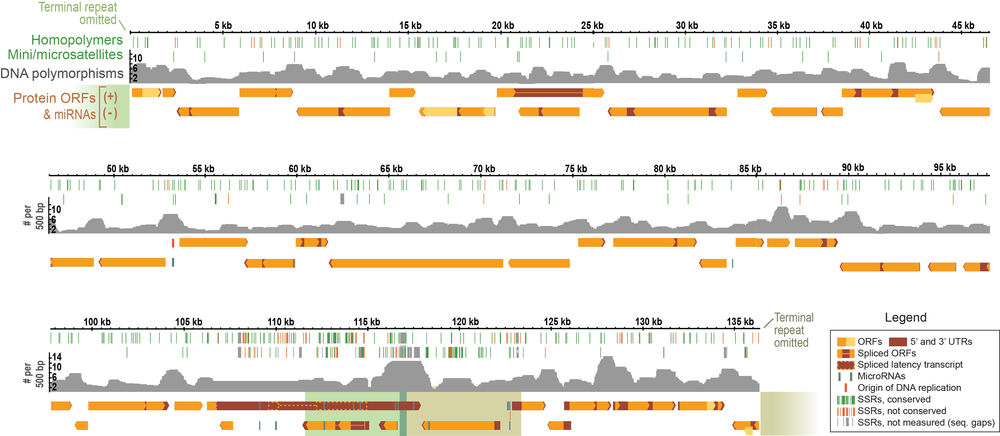Bigger genome allows for more functions
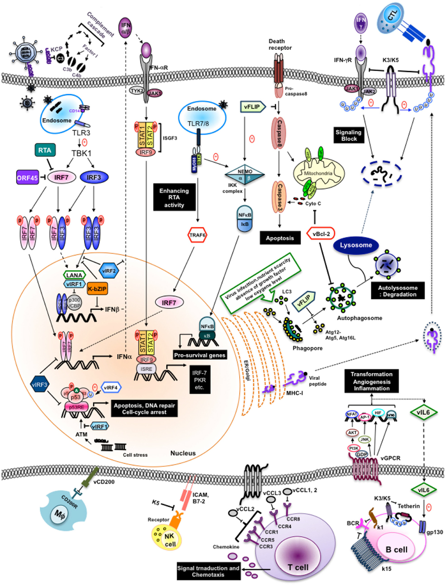DNA viruses
- Herpesviruses: HSV, Epstein–Barr virus (EBV), Varicella, Cytomegalovirus (CMV), Kaposi's sarcoma-associated herpesvirus (KSHV)
- Papillomavirus (HPV)
- Smallpox
Bacterial cell
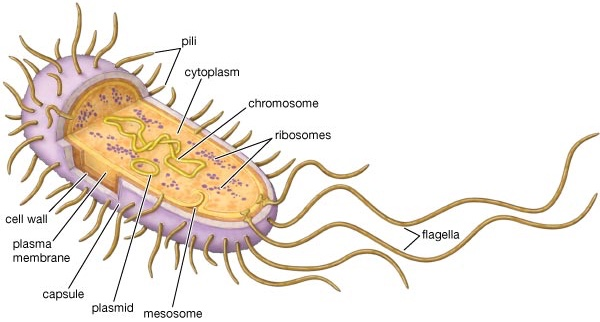Bacterial diversity
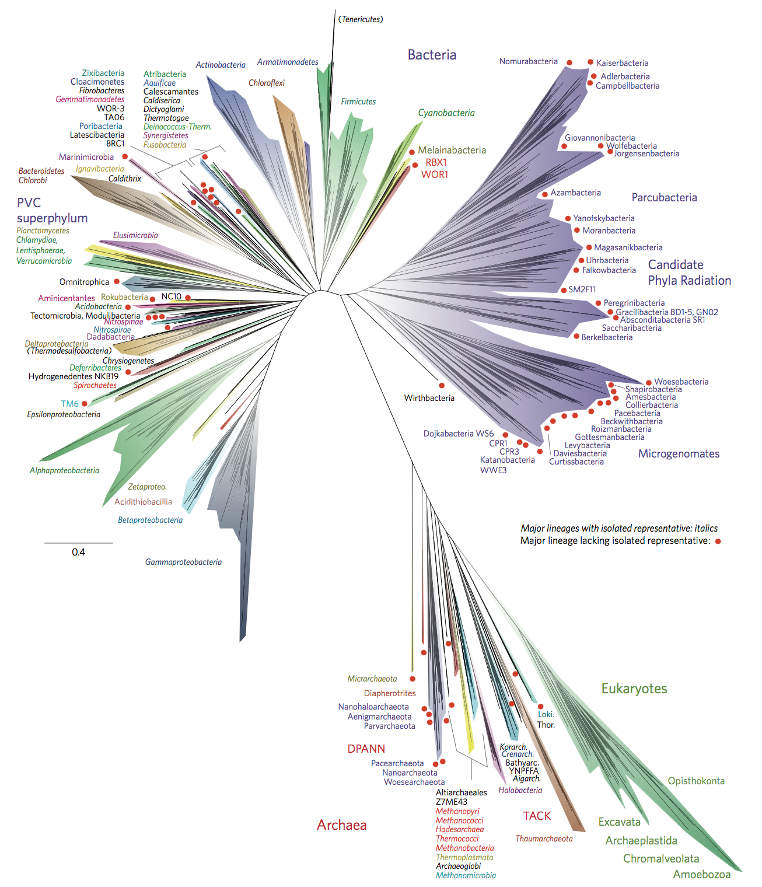Core vs pangenome
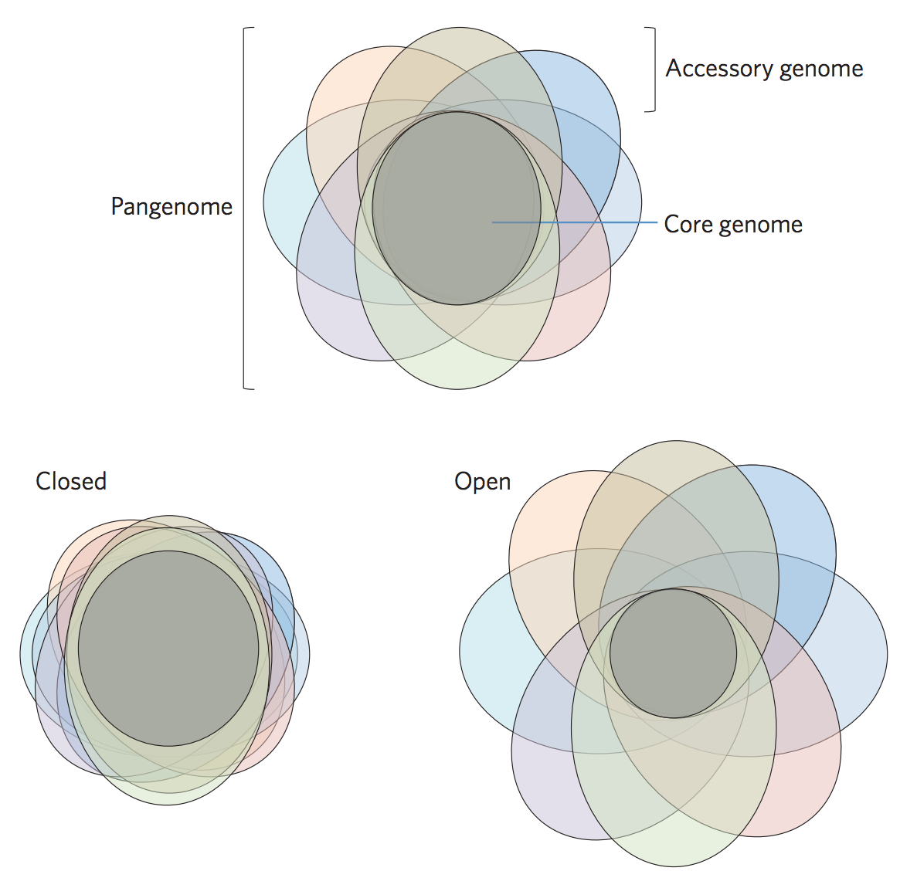Bacterial pathogens
- Tuberculosis
- C. difficile
- Shigella
- S. aureus (MRSA)
- Cholera
- Y. pestis
- Typhoid
- Klebsiella
Parasites
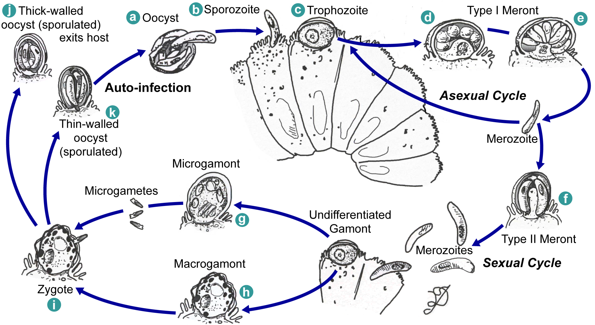Parasite lifecycle
- Malaria
- Cryptosporidium
- Trypanosomes
- Giardia
- Leishmaniasis
Influenza
Prototypical antigenically evolving pathogen
Influenza virion

Influenza life cycle
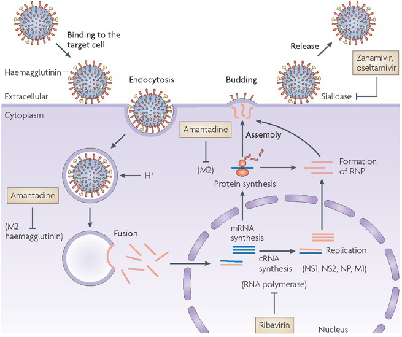1918 "Spanish flu"

Flu pandemics caused by host switch events

Host switch events often occur through reassortment

Host switch events often occur through reassortment

Reassortment creates different histories

Influenza B does not have pandemic potential

Phylogenetic trees of different influenza lineages